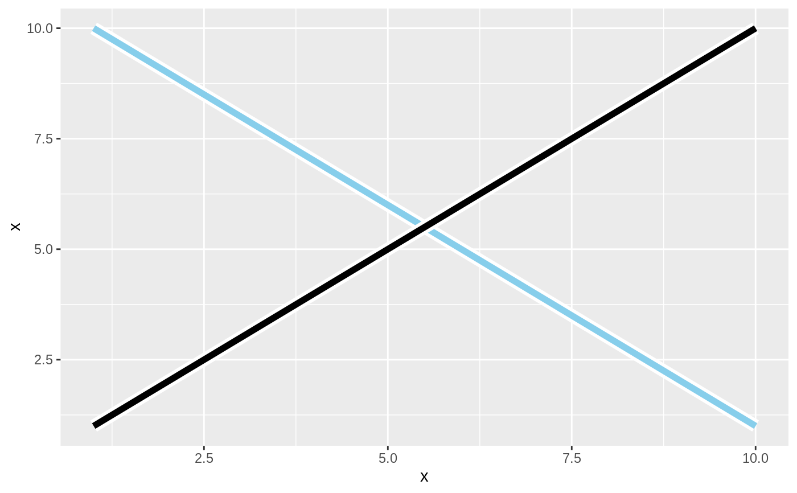

operations can be added together to form stacks of operations, which when multiplied by (applied to) layer-like objects, those layer-like objects are distributed over the operations (i.e. copied).
Usage
# S4 method for operation
sum(x, ..., na.rm = FALSE)
# S4 method for operation,operation
+(e1, e2)
# S4 method for operation,numeric
+(e1, e2)
# S4 method for numeric,operation
+(e1, e2)
# S4 method for operation_sum
format(x, ...)Details
Addition of ggblend operations depends on the types of objects being summed:
Examples
library(ggplot2)
# adding operations together creates a sum of operations
adjust(color = "red") + adjust(linewidth = 2)
#> <operation>: (adjust(colour = "red") + adjust(linewidth = 2))
# addition and multiplication obey the distributive law
op = (adjust(aes(y = 11 -x), color = "skyblue") + 1) * (adjust(color = "white", linewidth = 4) + 1)
op
#> <operation>: (adjust(aes(y = ~11 - x), colour = "white", linewidth = 4) + adjust(aes(y = ~11 - x), colour = "skyblue") + adjust(colour = "white", linewidth = 4) + 1)
# multiplication by a geom returns a modified version of that geom,
# distributed over the sum of the operations
data.frame(x = 1:10) |>
ggplot(aes(x = x, y = x)) +
geom_line(linewidth = 2) * op
